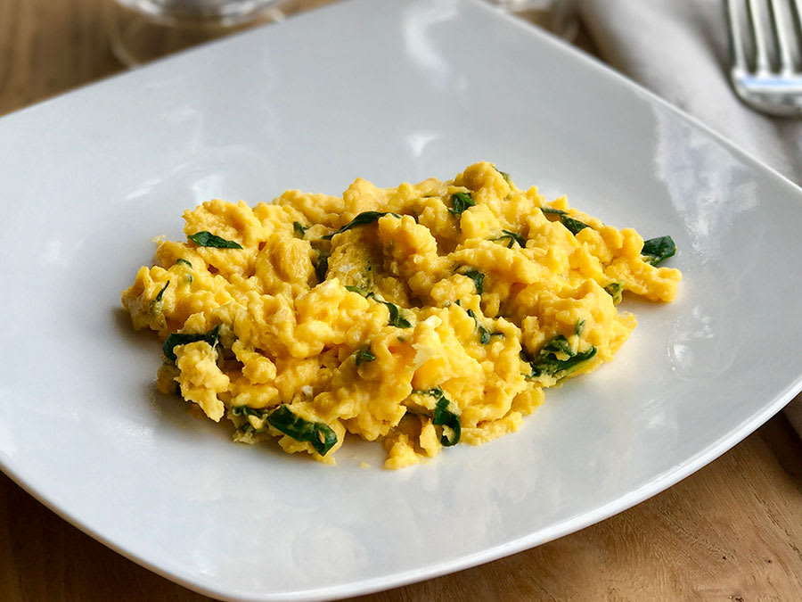
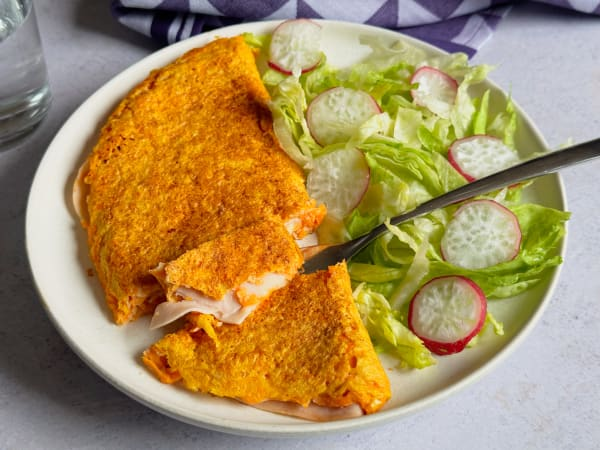
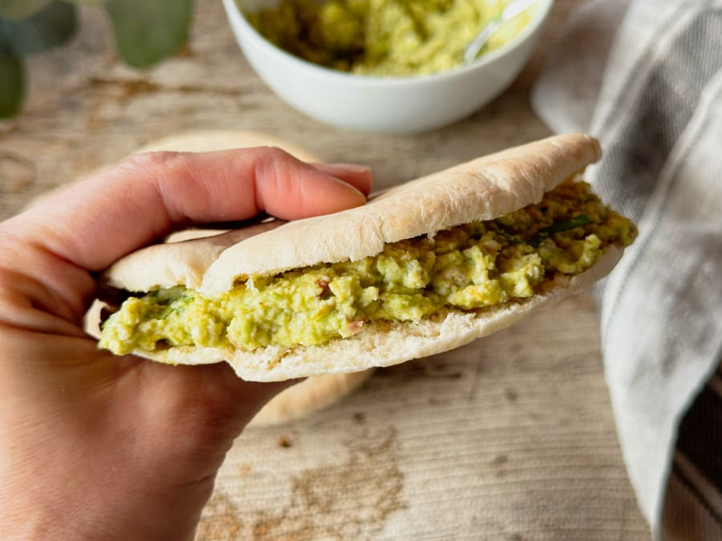
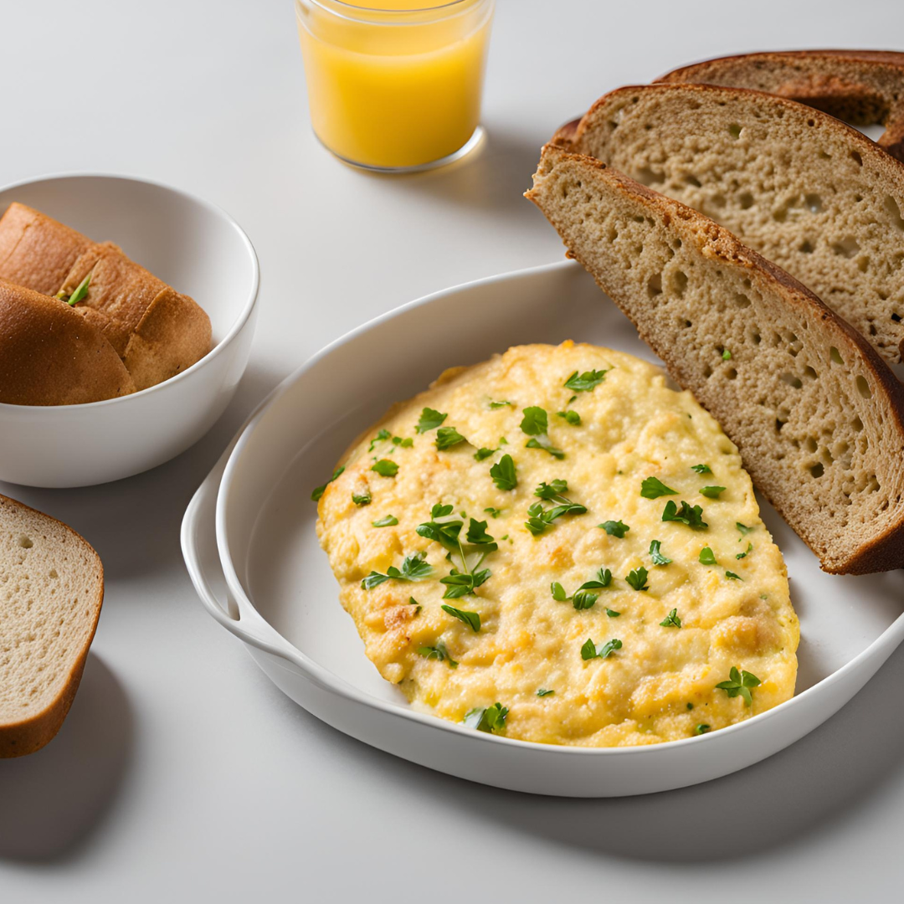
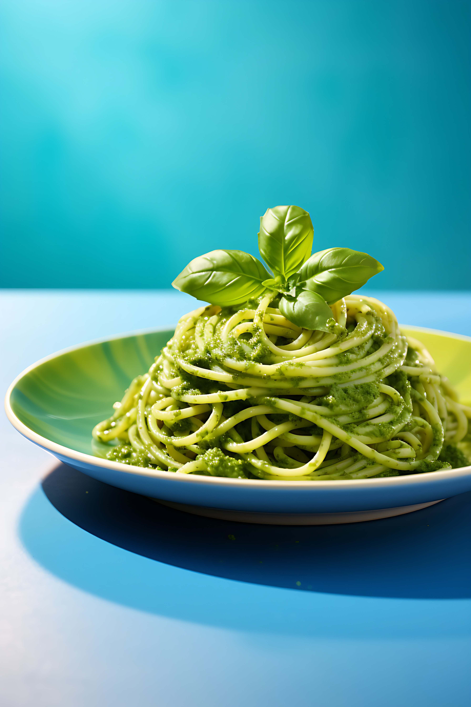
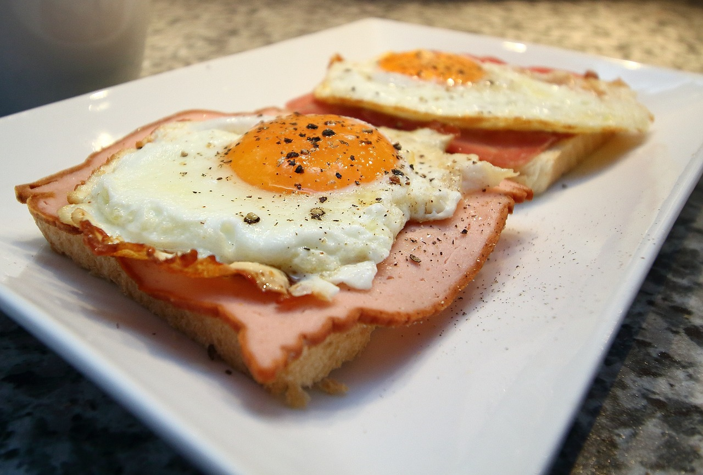

HUEVOS REVUELTOS CON ESPINACA
INGREDIENTES para 1 porción.
Cebolla - al gusto.
Huevos - 1.
Espinaca - 60 gramos.
Sal - 1 pizca.
Aceite de oliva - 1 cdita.
PASOS
1. Lavar las espinacas y cortarlas en tiras.
2. En una sartén, caliente un poco el aceite y sofríe la cebolla hasta que comiencen a dorarse,
entonces añadir las espinacas y mantenerlas a fuego medio durante 5-6 minutos.
3. Agregar los huevos batidos y la pizca de sal, cocinar a fuego bajo hasta que el huevo esté en
el punto de cocción adecuado.
OPCIONAL
4. Acompañar con una taza de frijoles cocidos/ molidos y 1 rebanada de pan integral.2 tostadas integrales.
TORTILLA DE ZANAHORIA CON JAMÓN DE PAVO Y QUESO MOZZARELLA
INGREDIENTES para 1 porción.
1. Zanahoria - ½ (dependiendo del tamaño de la zanahoria).
2. Jamón de pavo - 1 loncha (lasca).
3. Queso mozzarella - al gusto (opcional).
4. Huevos - 1.
5. Harina de avena - ½ cucharada.
6. Sal - 1 pizca.
7. Aceite de oliva - ½ cucharada.
PASOS
1. Pelar y rallar la zanahoria.
2. Batir los huevos en un recipiente
3. Añadir la zanahoria rallada y la harina de avena al huevo batido, la pizca de sal y mezclar todo.
4. Echar el aceite en una sartén. Cuando esté caliente, echar la mezcla y
cocinar a fuego medio. Cuando la tortilla comience a cocinarse, extender las lascas de jamón de pavo y el queso.
Con cuidado, doblar la tortilla por la mitad.
5. Cocinar a fuego medio-bajo durante un ratito y darle la vuelta.
También, puedes ayudarte de un plato para darle la vuelta.
OPCIONAL
1. Acompañar con una taza de frijoles cocidosPAN PITA RELLENA DE AGUACATE Y POLLO
INGREDIENTES para 1 porción.
1. Aguacates - ½.
2. Pechugas de pollo - ½.
3. Pan pita - 1 unidad.
4. Aceite de oliva - ½ cdita.
5. Sal - 1 pizca.
PASOS
1. Echar el aceite de oliva en un sartén, que caliente sofríe la pechuga con sal por ambos lados,
hasta cocinarla por dentro.
2. Desmenuzar la pechuga, puede apoyarse de dos tenedores.
3. En un plato hondo o un bowl, sacar los aguacates y añadirles un poco de sal. Con ayuda de un tenedor
o un aplasta papa, hacer puré el aguacate.
4. Mezcla el aguacate con el pollo picado.
5. Tostar los panes y rellénalos con la mezcla de aguacate y pollo.
TORTILLA DE COLIFLOR Y QUESO
INGREDIENTES para 1 porción
1. Coliflor - 100 gramos.
2. Huevos - 1 ½ o 2, dependiendo del tamaño del huevo.
3. Queso rallado (mozzarella) - ¼ taza.
4. Sal - 1 pizca.
5. Aceite de oliva - ½ cucharadita.
6. Pan integral - 1 rebanada.
7. Cilantro picado (opcional).
8. Especies al gusto (opcional).
PASOS
1. Rallar la coliflor cruda (bastante fina)
2. En un recipiente hondo batir los huevos. Luego, añadir la coliflor picada, un poco de sal y mezclar.
3. Echar el aceite en una sartén, cuando esté caliente, verter la mitad de la mezcla y extenderla por toda la sartén.
4. Cocinar durante varios minutos a fuego medio.
5. Cuando estén un poco cocinados, echar la mitad del queso rallado y con cuidado cierra por la mitad la tortilla.
Luego un minuto o hasta que se vea cocida de un lado, dar la vuelta a la tortilla para que se dore por el otro lado.
6. Tostar el pan.
OPCIONAL
1. Acompañar con una taza de frijoles cocidos
PAPAS RELLENAS CON JAMÓN Y QUESO

INGREDIENTES para 1 porción.
1. Queso rallado - 2 cucharada grande.
2. Papas - 1 o 2 (dependiendo del tamaño).
3. Queso parmesano - 1 cucharada (opcional).
4. Jamón de pavo - 2 lonjas.
5. Sal - 1 pizca.
5. Pimienta - ½ pizca.
PASOS
1. Lavar las papas, córtalas por la mitad y ponerlas a cocer en agua hirviendo. Cuando estén blandas, dejarlas enfriar un poco.
Con una cuchara saca parte de su carne.
2. En un recipiente aplastar con un tenedor lo que sacaste de la papa y echarle un poco de sal y pimienta.
3. Cortar el jamón en trozos y añadirlo al recipiente con la papa. (Añadir también el queso parmesano rallado).
4. Rellenar las papas con la mezcla de queso, jamón y papa. Esparcir el queso rallado por encima y meterlas en el horno a 200°C durante 5 minutos.
Hasta que el queso se derrita.
PASTA EN SALSA DE ESPINACA, AGUACATE Y QUESO PARMESANO
INGREDIENTES para 1 porción
1. Espinaca - 60 gramos.
2. Ajo - 1 diente.
3. Cebolla - ¼ taza.
4. Queso parmesano - ¼ taza.
5. Macarrón - 90 gramos.
6. Aguacate - ½.
7. Aceite de oliva - 1 cda.
8. Sal - 1 pizca.
PASOS
1. Lavar la espinaca, cortar la cebolla y el ajo.
2. Cocinar la pasta en agua hirviendo el tiempo que indica sus instrucciones. Reservar una taza y media del agua de cocción.
3. Mientras está en cocción la pasta, en una sartén con el aceite de oliva, sofreír a fuego medio-bajo la cebolla y el ajo picado.
Después de un rato, añadir las espinacas y saltear a fuego medio y con un poco de sal.
4. En el vaso de tu batidora las espinacas salteadas, el aguacate, el queso parmesano rallado y una taza del agua que has reservado de la cocción.
Tritura durante varios minutos, hasta que la salsa quede homogénea. Comprueba si necesita un poco más de sal o está bien y corrige en su caso. Si sientes que está muy densa, añade un poquito más del agua que tenías reservada.
TOSTADAS DE PAN CON HUEVO Y JAMÓN
INGREDIENTES para 1 porción
1. Huevos - 2.
2. Pan integral de caja- 2 rebanadas.
3. Jamón - 2 lascas.
4. Sal - 2 pizca.
5. Pimienta - 2 pizcas (opcional).
6. Aceite de oliva - 1 cucharada.
PASOS
1. Freír los huevos (1 x 1) en una sartén con aceite de oliva, con sal y pimienta.
2. Mientras esperas los huevos, empezar a tostar el pan integral (al gusto)
3. Armar los panes, con lascas de jamón (una para cada pan), colocar el huevo arriba.
OPCIONAL
1. Untar aguacate en el pan, antes del jamón.
2. Acompañar con una taza de frijoles cocidos.
HUEVOS ESTRELLADOS EN TOMATADA
INGREDIENTES para 1 porción.
1. Tomates - 2.
2. Cebolla - ¼ de taza.
3. Ajo - ½ (opcional).
4. Huevos - 2.
5. Aceite de oliva - ½ cucharada.
6. Sal.
7. Orégano - ⅓ cucharada (opcional).
8. Cilantro - 1 puñado (opcional).
PASOS
1. Hacer el ajo, la cebolla y el cilantro muy picaditos, los tomates en cuadritos.
2. Poner a calentar una cacerola con el aceite, agregar la cebolla y el ajo.
Saltearlas un poco y luego agregar el tomate con un poco de sal y orégano, dejar en cocción a fuego lento hasta que el tomate suelte un poco de jugo, aproximadamente unos 4 minutos.
3. Entonces, agregar los huevos, un poco más de sal en los huevos y tapar la cacerola, hasta que los huevos estén bien cocidos.
OPCIONAL
1. Acompañar con pan integral tostado.